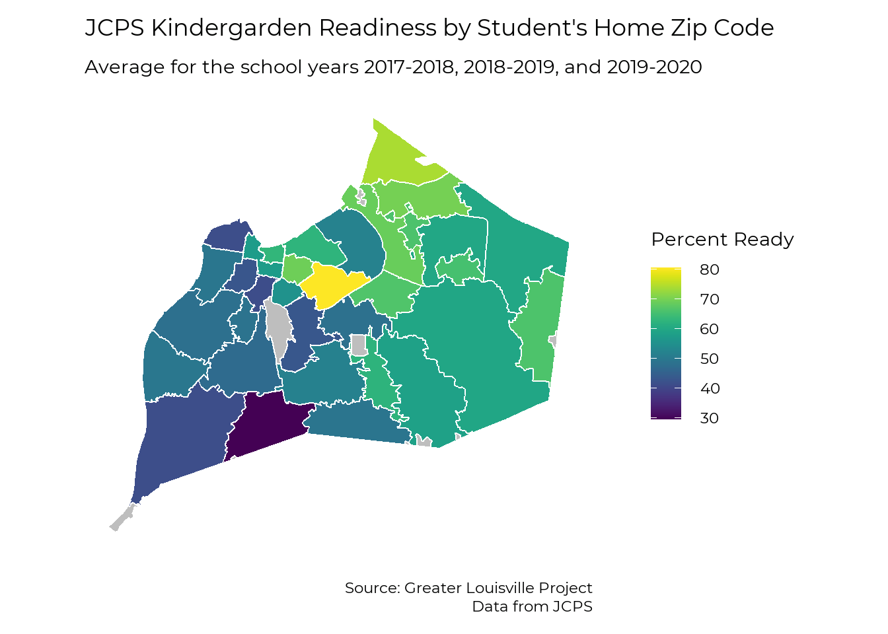

Early Childhood
Greater Louisville Project
2021
Early Care and Pre-K
Cost and Availability of Childcare
Childcare Workers compensation / education
Head Start
Child Health
Adverse Childhood Experiences
Child Food Security
Kindergarten Readiness
by Student Zip Code
# Load zip code map
load("raw_data/map_zip.RData")
# Ready in kready data
kready_zip <- readxl::read_excel("raw_data/Copy of 1920_Brigance Zip Code_Prior Settings TablesForORR.xlsx",
sheet = "ZipCode3Years",
range ="B4:K38",
col_names = c("zip", paste0(c("num_", "ready_", "notready_"),
rep(2018:2020, each = 3))),
col_types = c("text", rep("numeric", 9)),
na = "*")
# Clean and organize data frame
kready_zip %<>%
pivot_longer(num_2018:notready_2020, names_to = c("var_type", "year"), names_sep = "_") %>%
filter(var_type != "notready") %>%
mutate(
var_type = case_when(var_type == "num" ~ "population",
var_type == "ready" ~ "percent")) %>%
transmute(
zip, year, var_type,
kready = if_else(var_type == "percent", value * 100, value))
# Summarize data frame over three years due to unstable data
kready_zip_sum <- kready_zip %>%
pivot_wider(names_from = var_type, values_from = kready) %>%
group_by(zip) %>%
filter(all(!is.na(percent))) %>%
summarise(
percent = weighted.mean(percent, population),
population = sum(population),
.groups = "drop") %>%
rename(kready = percent)
# Join data to map
map_zip %<>% left_join(kready_zip_sum, by = "zip")
ggplot(map_zip) +
geom_sf(aes(fill = kready)) +
#scale_fill_manual(values = viridis::viridis(6, direction = -1), na.value = "grey") +
viridis::scale_fill_viridis(na.value = "grey",
name = "Percent Ready") +
theme_bw(base_size = 22, base_family = "Montserrat") +
theme(panel.grid = element_blank(),
axis.text = element_blank(),
axis.ticks = element_blank(),
axis.title = element_blank(),
panel.border = element_blank()) +
labs(title = "JCPS Kindergarden Readiness by Student's Home Zip Code",
subtitle = "Average for the school years 2017-2018, 2018-2019, and 2019-2020") +
theme(
panel.background = element_rect(fill = "transparent", color = NA), # bg of the panel
plot.background = element_rect(fill = "transparent", color = NA), # bg of the plot
legend.background = element_rect(fill = "transparent", color = "transparent"), # get rid of legend bg
legend.box.background = element_rect(fill = "transparent", color = "transparent"), # get rid of legend panel bg
legend.key = element_rect(fill = "transparent",colour = NA))
by School Location
load("raw_data/kready_jc.RData")
load("raw_data/map_elementary.RData")
# Filter out
kready_jc_subset <- kready_jc %>%
filter(code != "275",
year == 2020,
demographic == "All Students",
prior_setting == "All Students") %>%
mutate(code = str_sub(code, 4, 6) %>%
as.numeric)
map_elementary %<>%
rename(
SCHOOL_NAME = SCHOOL_NAM,
LOCATION = LocNumber,
CLUSTER = ClusterNum)
map_elementary %<>%
left_join(kready_jc_subset, by = c("LOCATION" = "code"))
ggplot(map_elementary) +
geom_sf(aes(fill = kready)) +
#scale_fill_manual(values = viridis::viridis(6, direction = -1), na.value = "grey") +
viridis::scale_fill_viridis(na.value = "grey",
name = "Percent Ready") +
theme_bw(base_size = 22, base_family = "Montserrat") +
theme(panel.grid = element_blank(),
axis.text = element_blank(),
axis.ticks = element_blank(),
axis.title = element_blank(),
panel.border = element_blank()) +
labs(title = "JCPS Kindergarden Readiness by School Location", 2020) +
theme(
panel.background = element_rect(fill = "transparent", color = NA), # bg of the panel
plot.background = element_rect(fill = "transparent", color = NA), # bg of the plot
legend.background = element_rect(fill = "transparent", color = "transparent"), # get rid of legend bg
legend.box.background = element_rect(fill = "transparent", color = "transparent"), # get rid of legend panel bg
legend.key = element_rect(fill = "transparent",colour = NA))
by Prior Setting
load("raw_data/kready_ky.RData")
kready_louisville <- kready_ky %>%
filter(variable == "lou",
sex == "total",
race == "total",
frl_status == "total",
prior_setting %in% c("State Funded", "Head Start", "Child Care", "Home"))
plt_by(kready_louisville,
prior_setting,
kready,
title_text = "Kindergarten Readiness by Prior Setting")
by Race
kready_race <- kready_ky %>%
filter(variable == "lou",
sex == "total",
race %in% c("black", "white"),
frl_status == "total",
prior_setting == "All Students")
plt_by(kready_race,
race,
kready,
title_text = "Kindergarten Readiness by Race")